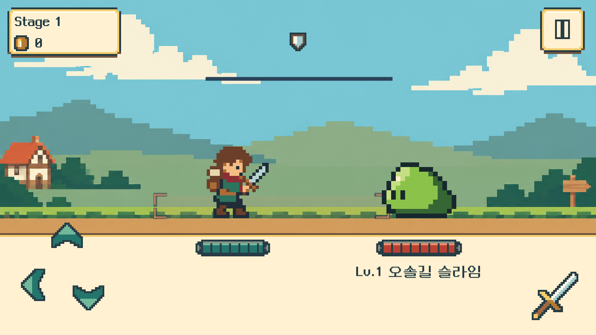
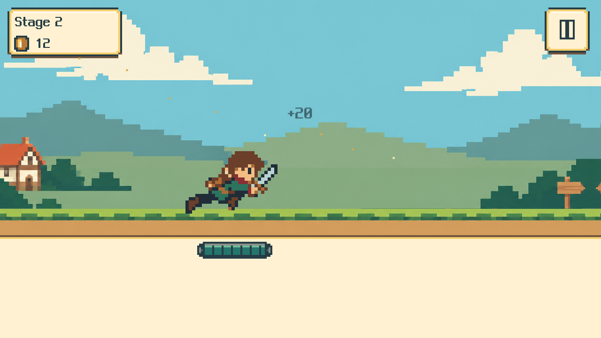

기존 동작을 새 외형에
달리기 8장·400ms, 베기 14장으로 연결했습니다. 베기는 접근→베기→제자리 복귀이며 접촉은 200ms입니다. Idle·위 회피·뒤 회피·피격도 새 복장으로 맞췄습니다. 아래 쳐내기는 베기 원본에 전용 타이밍을 사용합니다.
이전 적용 기록 · PLAYER + HP V2 · UNITY 0.9.1
갈색 머리, 붉은 스카프, 초록 튜닉과 여행 가방, 한 자루 검. 얼굴이 보이는 모험가로 다시 만들고, 32×32 원본과 8색 팔레트로 픽셀을 더 굵게 표현했습니다.
이전0.9.1 적용·검증 기록입니다. 최신 작업은 상단0.9.2를 기준으로 봅니다. 기존 승인 달리기·베기의 자세를 새 캐릭터의 골격에 맞춰 다시 제작했습니다. 원본 6종 52장에 아래 쳐내기의 베기 재사용을 더해 7개 동작을 연결했습니다.


달리기 8장·400ms, 베기 14장으로 연결했습니다. 베기는 접근→베기→제자리 복귀이며 접촉은 200ms입니다. Idle·위 회피·뒤 회피·피격도 새 복장으로 맞췄습니다. 아래 쳐내기는 베기 원본에 전용 타이밍을 사용합니다.
플레이어 원본 몸높이 22px를 720p에서 7배로 표시합니다. 체력바 높이는 36px, 격자는 720p에서 4px·360p에서 2px입니다. 기존 폭과 배치를 유지하며 체력바 경계만 실제 화면 픽셀에 맞췄습니다.
1280×720·640×360의 전투·모션 관측, 표적 PlayMode 11/11, 체력바 30상태 재검사를 통과했습니다. 복장·검·손발 연결은 아트 담당과 QA가 원본 및 실제 렌더 프레임으로 검토했습니다.
조작은 위·뒤 회피 + 아래 쳐내기, 공격은 검 버튼/Space입니다. 전투 판정·성장·경제·저장 규칙은 유지합니다. ZIP 전체를 풀고 LastBellMvp.exe를 실행하세요.
QA는 실제 렌더 프레임과 기록 시각을 대조했습니다. 정상속도 영상 직접 재생이나 60fps 성능 보증은 포함하지 않습니다. 일반 배포판은 빌드·패키지 검증을 완료했으며 별도 플레이는 하지 않았습니다. OS 마우스·키보드 실입력과 모바일 실기기 검사는 보류 상태입니다.
모험가 원형 · 기존 동작 조사·독립 아트 검토 · 체력바 비교 · 적용 기록 · 빌드·파일 기록 · 최종 QA